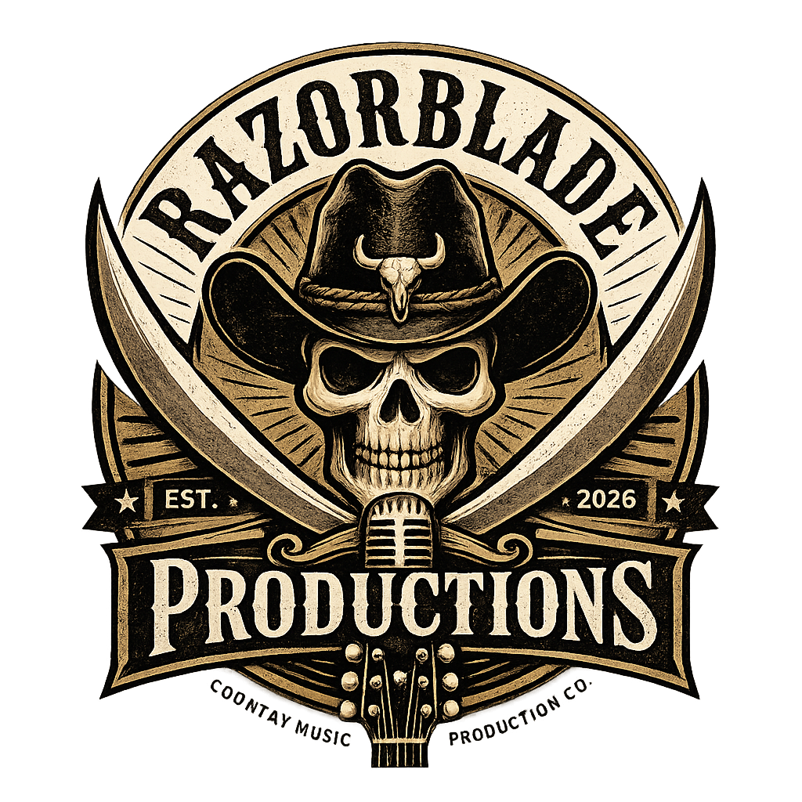

2027 • Logan Village, Queensland
Country Music Festival
Coming to the Village
The Beginning of Something Big
Country Music Is Coming to the Village
The inaugural Boots & Barrel Country Music Festival is set to bring the energy, community and spirit of country music to Logan Village in 2027, featuring a lineup of well-known headline country artists alongside emerging talent.
We're creating more than just a music festival. Boots & Barrel is an opportunity to bring together country music fans, artists, creators, influencers, podcasters, bloggers and industry professionals for a celebration built around great music, community and the Australian country lifestyle.
With the potential to welcome up to 2,000 attendees , the festival is designed to create an unforgettable experience while providing a unique platform for businesses and brands to connect directly with a passionate and engaged audience.
Explore Sponsorship Opportunities →The Experience
More Than Music
Live Country Music
Experience live performances and discover the sounds of Australian country music.
Country Culture
A celebration of the lifestyle, community and culture that makes country music so special.
Community
Bringing people, businesses, artists and the wider community together in Logan Village.
Something New
A brand-new festival experience with the ambition to become a major event on the local calendar.
Sponsoring the inaugural Boots & Barrel Country Music Festival in 2027 puts your brand in front of a potential audience of up to 2,000 country music fans, artists, influencers, podcasters, bloggers and industry professionals.
Your brand can be visible throughout the festival experience, while supporting the creation of a new community event coming to Logan Village.
Brand Exposure
Put your brand in front of a passionate and engaged country music audience.
Community Connection
Support a new local event and connect your business with the Logan Village community.
Industry Reach
Connect with artists, creators, influencers, podcasters and industry professionals.
Choose Your Level
Sponsorship Packages
| Benefit | Silver $1,500(20 Spot Max) |
Gold $3,000(10 Spot Max) |
Diamond $7,500(2 Spot Max) |
Naming Rights $25,000(1 Spot Max) |
|---|---|---|---|---|
| Exclusive branding on festival name and logo |
N/A | N/A | N/A | ✓ |
| Brand Promotion | ✓ | ✓ | ✓ | ✓ |
| Activation Opportunities |
N/A | N/A | ✓ | ✓ |
| Banner Placement | ✓ | ✓ | Premium | Main stage and others |
| MC Acknowledgements |
✓ | ✓ | ✓ | Before and after every artist |
| Website Logo | ✓ | ✓ | ✓ | ✓ |
| Social Media | Min 2 dedicated sponsor posts |
Min 4 dedicated sponsor posts |
Min 6 dedicated sponsor posts |
Unlimited |
| VIP Tickets | 1 | 3 | 5 | 10 |
Have Something Else to Contribute?
Sponsorship doesn't always have to be a cash contribution. We understand that businesses may be able to contribute valuable products, equipment or services.
This could include products, gazebos, equipment, promotional materials, professional services, or other resources that can help make the festival possible.
We are open to discussing how your contribution could be incorporated into one of the sponsorship packages above, creating a partnership that provides value for both your business and the festival.
Let's Discuss Your Contribution
Presented By
Razorblade Productions
The team behind the music.
Razorblade Productions is an independent production company focused on creating memorable live music experiences and bringing people together through the power of music and entertainment.
Boots & Barrel Country Music Festival represents the beginning of an exciting new chapter, with the ambition to grow the festival into an event that celebrates artists, audiences and the wider music community.
Get In Touch →Let's Work Together
Become Part of the Story
Interested in sponsoring the inaugural Boots & Barrel Country Music Festival?
We'd love to discuss how your business can become part of bringing country music to the Village.
Contact Us